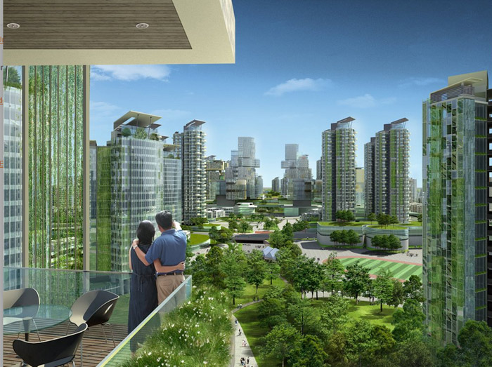

Sustainable Cities of the Future
With over half of the world’s population now living in cities, the demand for sustainable urban planning has never been greater. The cities of the future are being designed with eco-friendly transportation, renewable energy, and green architecture at their core.
Innovations such as vertical gardens, solar-panel skyscrapers, and AI-managed energy grids are reshaping urban landscapes. Planners are also focusing on pedestrian-first designs to reduce car dependency, improving air quality while fostering healthier lifestyles.
From Singapore’s smart city initiatives to Copenhagen’s carbon-neutral goals, cities around the globe are becoming testbeds for sustainability. These advances are not only reducing emissions but also improving quality of life, setting the blueprint for a greener future.